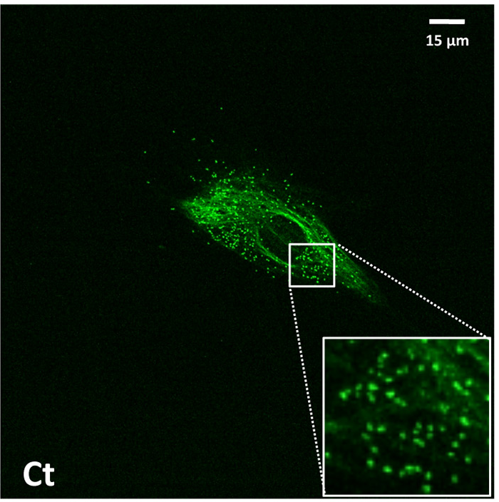
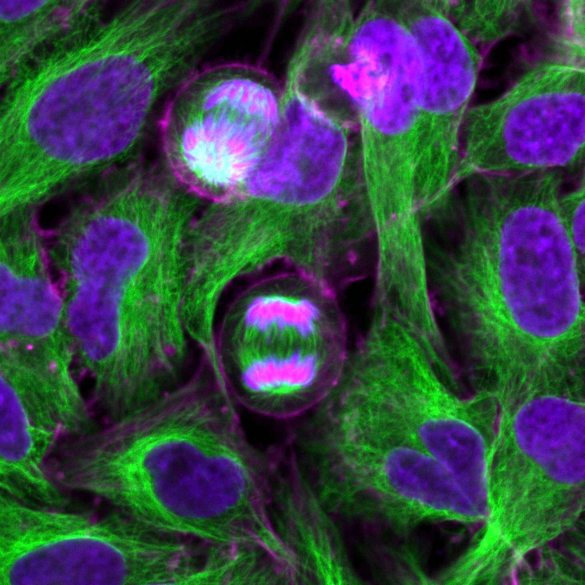
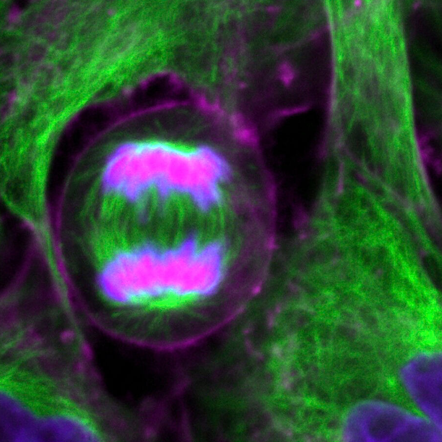

Peroxisomes and cytoskeleton
Two independent microscopy studies reveal selected cellular structures through fluorescent labels. The colors report labelling; these images do not form a registered map of one cell.
PMP70-labelled peroxisomal structures

Reading key: green marks the peroxisomal membrane protein PMP70, detected with anti-PMP70 and Alexa Fluor 488. The original 15 µm bar calibrates the main field. The authors’ boxed inset is a 3× digital enlargement; do not apply the main-field bar to that inset.
Cultured control human skin fibroblast, fixed and permeabilized; Leica TSC-SP8 confocal microscopy with a 63× oil objective. The punctate signal identifies selected marker-labelled structures, rather than natural organelle color or resolved membrane ultrastructure. Peroxisome function and a complete cell boundary are not measured here.
Nasca et al. (2018), Figure 4, right control (Ct) panel · CC BY 4.0. Lossless decoded-pixel crop (729,0–1429,704) from the publisher’s 1429 × 1376 WebP; source colors, labels, connectors, bar and inset unchanged. Exact fixation chemistry, donor age/sex and optical projection mode are unreported.
Complete original publisher figure includes the patient (Pt) comparison with altered staining and quantitative plots. Those panels are source context; the patient image is not presented as typical control morphology.
Microtubules, actin and nuclear material
Complete original field · 100 µm wide

Detail from this same field

Native crop: (650,750–1550,1650) in the 2048 × 2048 source. No resampling or color adjustment. The complete-field 100 µm width does not apply to this crop.
Reading key: the source identifies tubulin/microtubules, actin and nuclear/chromosomal material by the colors above. The field includes dividing cells, with green spindle-associated patterns near purple chromosomal material. The catalogue states 100 µm across the complete image; there is no original scale bar and none has been added.
This is a static light micrograph of the human cervical cancer cell line HeLa, not a time sequence or a full 3D filament map. Individual 7/25 nm filament diameters, motor transport and growth rates are not resolved or measured. Live/fixed status, exact labelling reagents, instrument and optical section/projection mode are not supplied by the archive.
Kevin Mackenzie, University of Aberdeen / Wellcome Collection, Dividing HeLa cells, LM, B0009861 · CC BY 4.0. Complete 2048 × 2048 JPEG unchanged; detail is a lossless decoded-pixel crop. Source color assignments retained. The owning record provides the HeLa derivation and ethical context.